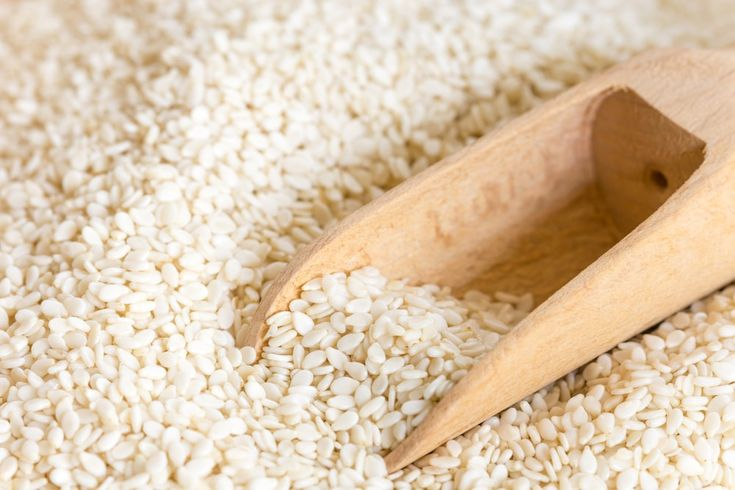

Sesame Cultivation Guide

1. Land Preparation
Prepare fine tilth by plowing 2–3 times.
Sesame prefers well-drained sandy loam soil with pH 5.5–8.0.
Incorporate FYM or compost (5 tons/acre) before last plowing.
2. Seed Selection & Sowing
Select certified, disease-free, high-yielding varieties.
Seed rate: 2–3 kg per acre.
Spacing: 30–45 cm between rows and 10–15 cm between plants.
Sow during Kharif (June–July) or Rabi (January–February).
3. Water Management
Requires 3–4 irrigations depending on soil type and climate.
Critical stages: flowering and capsule formation.
Ensure drainage; sesame is sensitive to waterlogging.
4. Fertilization Schedule
Basal application: Urea (15–20 kg), DAP (40–50 kg), MOP (15–20 kg).
Apply zinc sulfate if deficiency observed.
Light top dressing after 25–30 days if needed.
5. Weed & Pest Management
2 manual weedings: at 15 and 30 days after sowing.
Use pre-emergent herbicides like Pendimethalin if required.
Pests: Leaf roller, capsule borer — control with recommended insecticides.
Diseases: Leaf spot, wilt — apply fungicides if symptoms appear.
6. Investment Breakdown (Per Acre)
Input
Estimated Cost (INR)
Seeds
₹500 – ₹1,000
Fertilizers
₹1,000 – ₹1,500
Pesticides
₹500 – ₹1,000
Labor
₹4,000 – ₹6,000
Irrigation
₹800 – ₹1,200
Total Investment
₹7,000 – ₹10,700 per acre
7. Harvesting & Yield
Harvest when 70–80% of capsules turn yellow and start drying.
Expected yield: 4–6 quintals per acre.
8. Market Rate & Profit Estimation
Market price: ₹6,000 – ₹9,000 per quintal.
Gross returns: ₹24,000 – ₹54,000 per acre.
Net profit: ₹17,000 – ₹43,000 per acre.